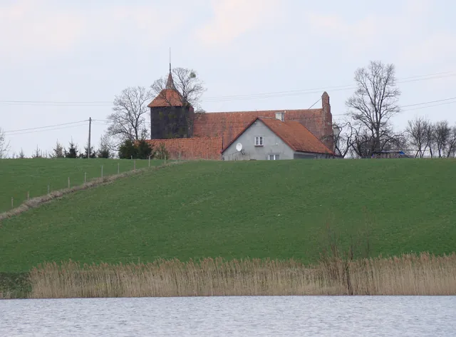
fot. Romek, CC BY-SA 3.0Tłokowo
Warmińska wieś lokowana w 1318 roku przez biskupa Eberharda z Nysy. Dziś spokojne siedliska wśród pól, przy drodze z Jezioran do Bisztynka.
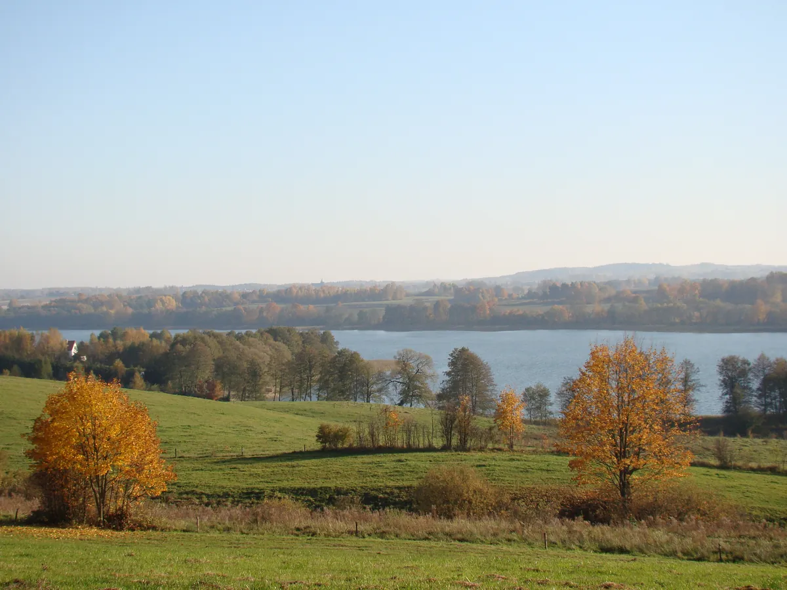
Cisza pól, gotycki kościół i jeziora w okolicy. 1,5 km od Jezioran, w sercu Warmii.
Wzgórze Pięciu Serc to nowe miejsce noclegowe w Tłokowie, warmińskiej wsi tuż za Jezioranami. Wokół pola, aleje i przydrożne kapliczki, a do jezior jest stąd blisko.
Tu opowiemy, skąd wzięła się nazwa i dla kogo jest to miejsce: dla rodzin, par, a może grup przyjaciół. Państwa słowami, bez folderowych formułek.
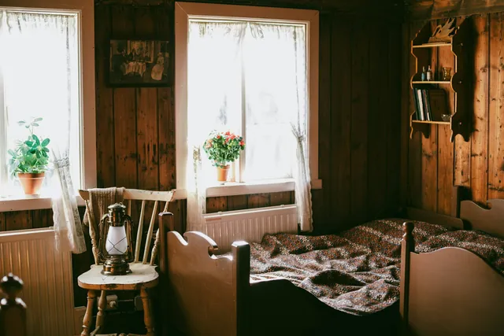
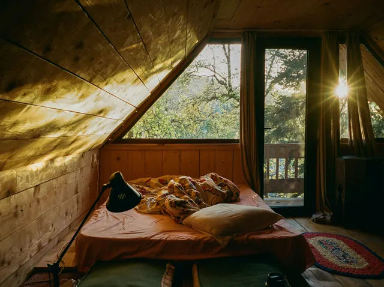
Pięć powodów, dla których warto przyjechać do Tłokowa. Wszystkie w zasięgu krótkiego spaceru albo przejażdżki.

fot. Romek, CC BY-SA 3.0Warmińska wieś lokowana w 1318 roku przez biskupa Eberharda z Nysy. Dziś spokojne siedliska wśród pól, przy drodze z Jezioran do Bisztynka.
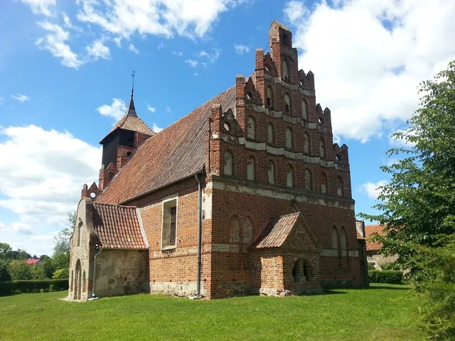
fot. W. Jezierewski, CC BY-SA 3.0Kościół św. Jana Chrzciciela z lat 1370-1390, z ołtarzem z 1702 roku i drewnianą wieżą. Obok barokowe sanktuarium św. Rocha, cel pielgrzymek.
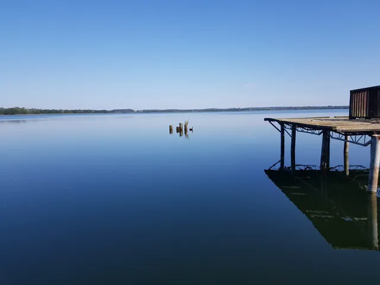
fot. Madridista30, CC BY-SA 4.0Tuż przy wsi jezioro Rink z kąpieliskiem. W okolicy Jezioran także Blanki, Ławki i Jezioro Luterskie: prawie 700 ha wody i plaża w Kikitach.
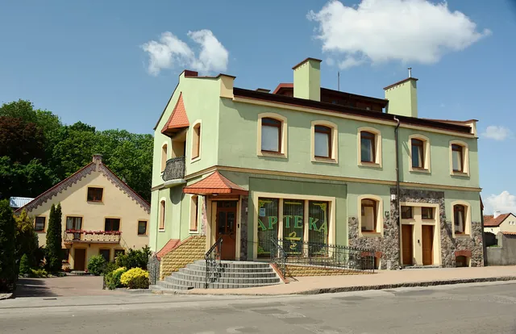
fot. Roman Eugeniusz, CC BY-SA 3.0Miasteczko nad Symsarną z prawami miejskimi od 1338 roku, 1,5 km od Tłokowa. Najbliższe miejsce na codzienne sprawunki.
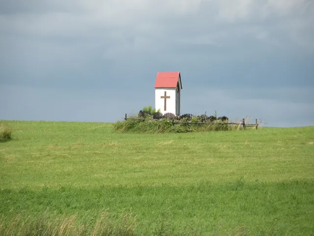
fot. S. Czachorowski, CC BY-SA 4.0Śródpolne kapliczki wokół wsi, a koło Ustnika rozlewiska Symsarny: rezerwat, w którym odpoczywa i gniazduje około 50 gatunków ptaków.
Na razie zdjęcia z okolicy i przykładowe wnętrza. Podmienimy je na zdjęcia Wzgórza: dom, pokoje, ogród, widoki o różnych porach roku.
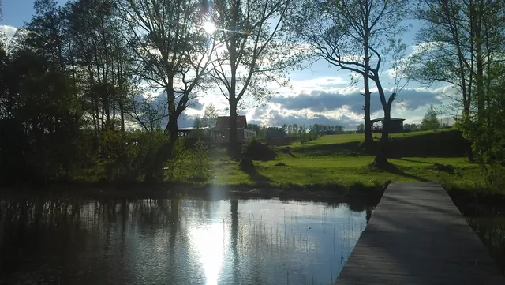
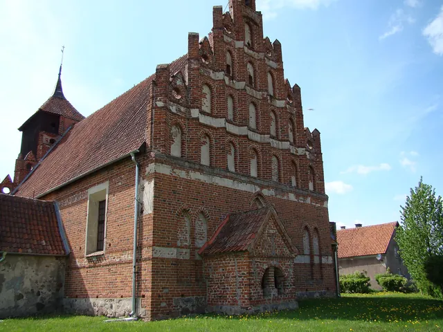
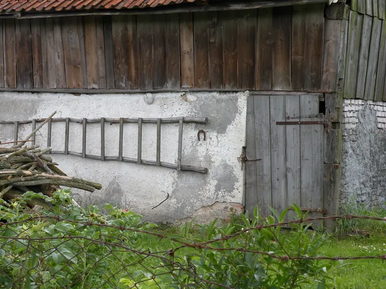
Napisz, kiedy chcesz przyjechać i w ile osób. Odpowiedź przyjdzie mailem.
Tłokowo 79
11-320 Jeziorany
Tłokowo leży ok. 1,5 km na północ od Jezioran, przy drodze z Jezioran do Bisztynka. Powiat olsztyński, województwo warmińsko-mazurskie.
Mapa Google jest wyłączona zgodnie z Twoim wyborem cookies.